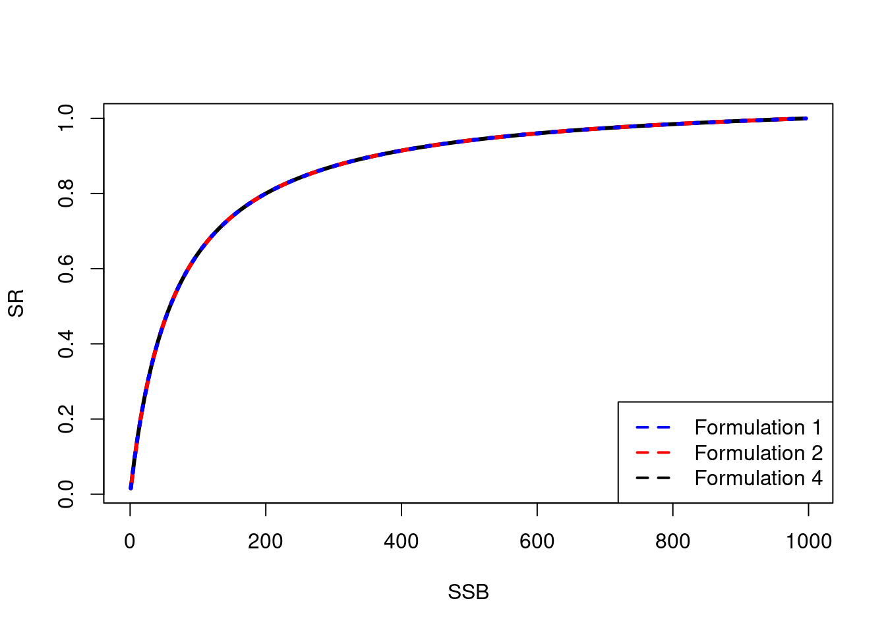

Chapter 19 Beverton-Holt stock recruitment relationship
A topic that has frequently confused me is the different Beverton-holt stock recruitment relationships and how if I use one for inference how can I convert the parameters to another format so that I can compare results and make comparable conclusions.
19.1 Formulation 1
(hilborn2013quantitative?) (Annex 1 pg 65)
\[ R_y = \frac{\alpha SB_y}{\beta + SB_y} \]
19.4 Formulation 4
Steepness parameter formulations from (mace1988generalised?).
\[ R_y = \frac{SB_y}{SB_0} / \left( 1 - \frac{5h - 1}{4h}\left(1 - \frac{SB_y}{SB_0}\right)\right) \]
Conversion of \(h\), \(B_0\) and \(R_0\) to \(\alpha\) and \(\beta\) for the other formulations.
19.4.1 Reparameterisation to formulation 1
\[ \alpha = \frac{4 * h * SB_0}{SB_0/R_0 * (5 * h - 1)} \] \[ \beta = \frac{SB_0 * (1 - h)}{5 * h - 1} \]
19.4.2 Reparameterisation to formulation 2
\[ \alpha = SB_0/R_0 \left(1 - \frac{h - 0.2}{0.8 h}\right) \] \[ \beta = \frac{h - 0.2}{0.8 h R_0} \]
#' BH
#' @description Beverton holt stock recruit relationship parameterised with steepness
#' @param SSB Spawning stock biomass
#' @param B0 equilibrium SSB
#' @param h steepness parameter as defined by Doonan and Mace 1981, represents
#' @return Stock recruit values between 0 and 1. You need to multiple them by R0 to get number of recruits
#' @export
#'
BH <- function(SSB,B0,h) {
ssb_ratio = SSB / B0
part_2 = (1 - ((5*h - 1) / (4*h)) * ( 1 - ssb_ratio))
val = ssb_ratio / part_2
return(val)
}
#' BH_non_equil
#' @description Beverton holt stock recuit relationship parameterised with a and b instead of steepness
#' @param SSB Spawning stock biomass
#' @param alpha classic params alpha BH param
#' @param beta classic params beta BH param
#'
#' @return Number of recruits acording to the Beverton holt relationship
#' @export
#'
BH_ab_parameter = function(SSB, alpha, beta, model_type = 1) {
R = 0
if(model_type == 1) {
R = (alpha * SSB) / (beta + SSB)
} else if (model_type == 2) {
R = SSB / (alpha + beta * SSB)
} else if(model_type == 3) {
R = (alpha * SSB) / (1 + beta * SSB)
}
return(R)
}
#' BH_convert_h_R0_to_a_b
#' @description Convert steepness (h), R0, B0 to the a and b formulation of the stock recruit curve
#' @param SSB Spawning stock biomass
#' @param alpha classic params alpha BH param
#' @param beta classic params beta BH param
#'
#' @return Number of recruits acording to the Beverton holt relationship
#' @export
#'
BH_convert_h_R0_to_a_b <- function(h, R0, B0, model_type = 1) {
a = b = SPR0 = 0
SPR0 = B0 / R0
if(model_type == 1){
a = (4 * h * B0) / (SPR0 * (5 * h - 1))
b = B0 * (1 - h) / (5 * h - 1)
} else if (model_type == 2) {
a = SPR0 * (1 - (steepness - 0.2) / (0.8*steepness))
b = (steepness - 0.2) / (0.8*steepness*R0)
}
return(list(a = a, b = b))
}
B0 = 1000
SPR0 = 0.001
R0 = B0/SPR0
steepness = 0.8
traditional_params = BH_convert_h_R0_to_a_b(steepness, R0, B0, model_type= 1)
traditional_params_alt = BH_convert_h_R0_to_a_b(steepness, R0, B0, model_type= 2)
SSB = seq(from = 1, to = 1000, by = 5)
SR = BH(SSB, B0 = B0, h = steepness)
SR_alt = BH_ab_parameter(SSB, alpha = traditional_params$a, beta = traditional_params$b, model_type = 1)/R0
SR_alt2 = BH_ab_parameter(SSB, alpha = traditional_params_alt$a, beta = traditional_params_alt$b, model_type = 2)/R0
plot(SSB, SR, type = "l", lwd = 3)
lines(SSB, SR_alt, lty = 2, col = "red", lwd =3)
lines(SSB, SR_alt2, lty = 3, col = "blue", lwd =3)
legend("bottomright", legend = c("Formulation 1", "Formulation 2", "Formulation 4"), col = c("blue","red","black"), lty = 2, lwd = 2)